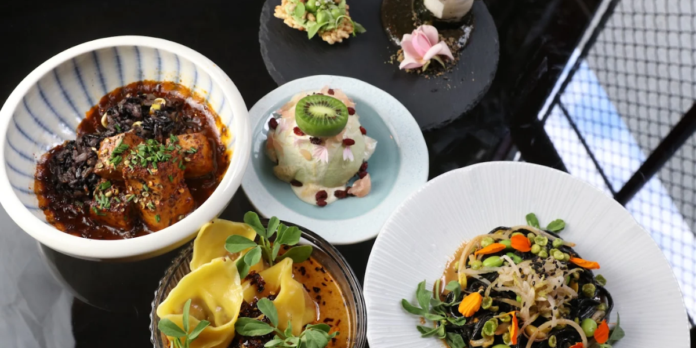
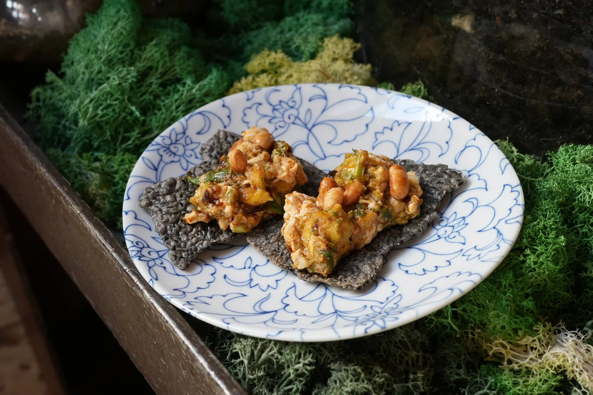
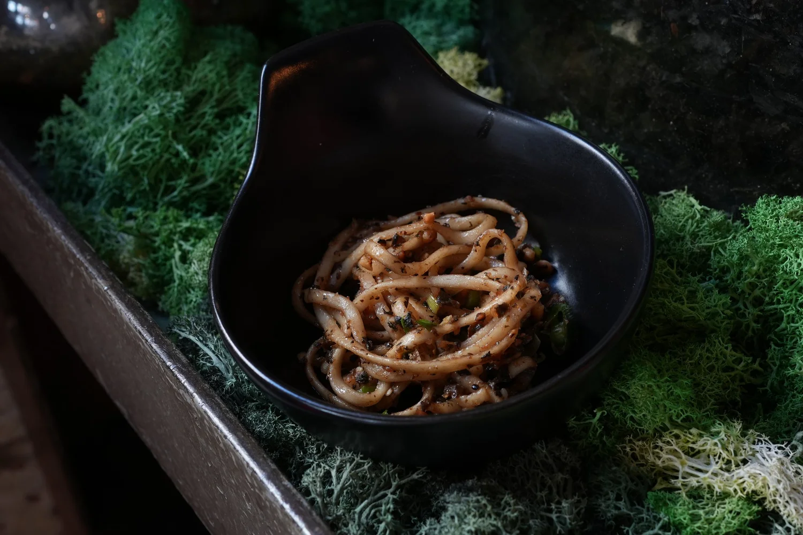
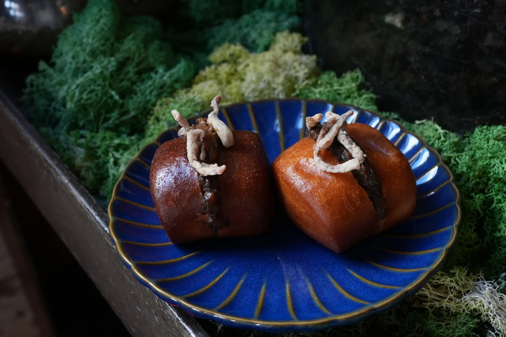
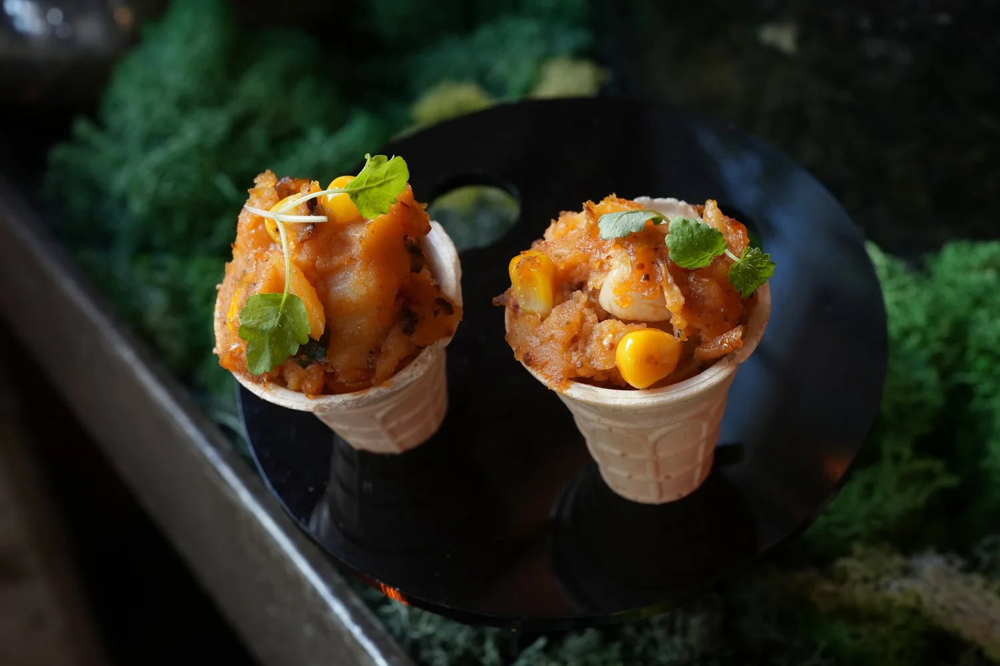
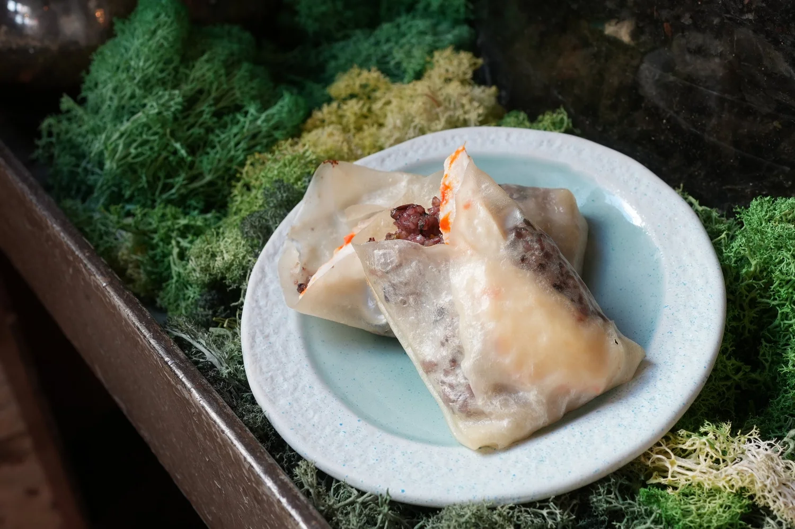
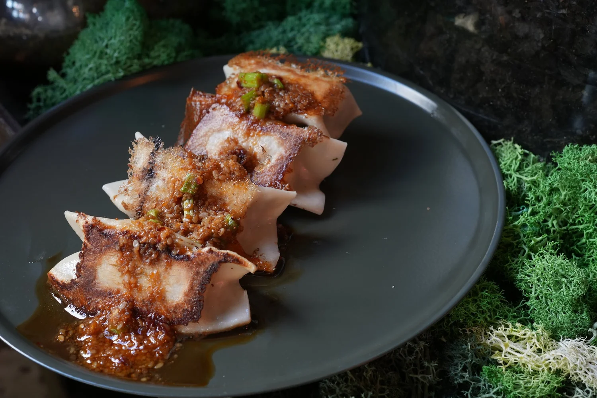
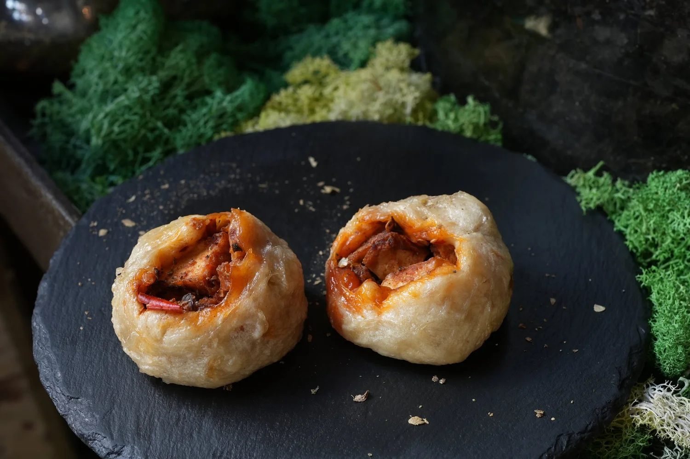
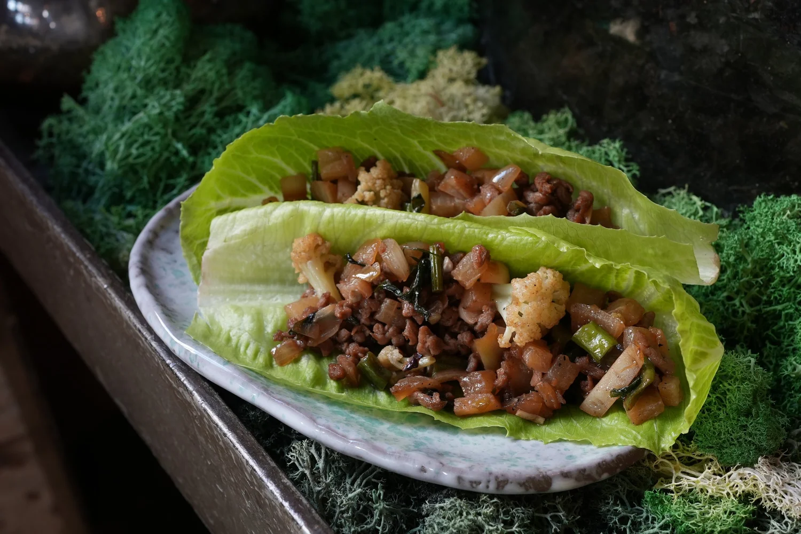
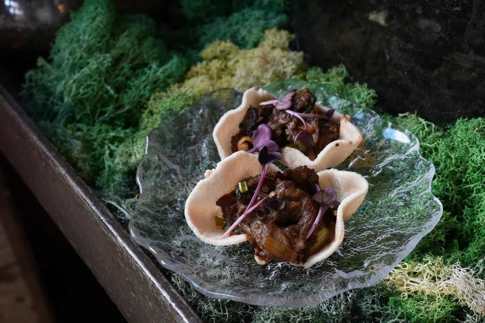

Unlimited Yum Cha

How SHU's Yum Cha Stands Apart
While traditional Yum Cha (Cantonese dim sum brunch) focuses on steamed baskets and teas, SHU reinvents the concept with modern vegan innovation rooted in contemporary Sichuan cuisine:
- SHU reinvents the concept with modern vegan innovation rooted in contemporary Sichuan cuisine:
- Infused with signature Sichuan spice profiles.
- Bold reinterpretations of familiar dishes (e.g., dumplings, baos)
- Emphasis on fresh, plant-based ingredients and vegan cooking techniques
- Inspired by the rich heritage of authentic Sichuan cuisine, while remaining fully plant-based
- A relaxed, communal environment perfect for weekend gatherings at a modern Sichuan restaurant in Melbourne
This makes us one of Melbourne's only places where you can enjoy a fully vegan, unlimited Yum Cha experience without sacrificing creativity or flavour.

SILKEN TOFU, AVOCADO, BLACK SESAME CRACKERS PLANT MINCE SAN CHOI BAO

CHILLED NOODLES, PEANUT BUTTER SOY DRESSING

BROWN RICE CRACKER WITH ASIAN HERBAL BUTTER

SPICY POTATO MASH CONE, GRILLED CORN

PLANT PRAWN & STICKY RICE POCKET

CRISPY CABBAGE DUMPLINGS

STEAMED CHICKPEA BAO, SHIITAKE MINCE

GRILLED SPINACH RICE BALL SKEWER
